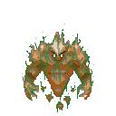
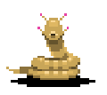
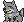
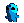

The Awoken Guardian
Defender of the builders, crafted to keep the walls safe.
A game I'm making · Started in GameMaker, moved to Godot
Little octopus-folk, a world full of monsters, and a god that's basically a rock with way too many legs. This is one of the games I've been working on, and it's been a fun excuse to come up with some very weird creatures.
Meet the Nautlins ↓The story so far
The Nautlins are small, quirky creatures who just want to live peacefully on their distant homeworld. Unfortunately, a cult of wizards on another world decided to summon their god. The god they got was The Opal, a rock with far too many legs and an attitude to match.
The portal wouldn't close, and The Opal started creating all sorts of unnatural monsters. Rather than fight the mess they made, the wizards opened another portal and started summoning Nautlins to do it for them. For some reason, being summoned gives each Nautlin strange new powers. The wizards can only safely summon one at a time, though. Their first attempt at summoning two went very badly.
How the game works
Your first Nautlin wakes up in a strange world, gets named Aaron 7 by a wizard, meets a very loyal dog named Sif, fights a few monsters, and probably dies within ten minutes.
But dying isn't the end. On your next life, the ghost of your previous Nautlin leads you to a hidden village where the souls of earlier Nautlins gather. Each life makes the next Nautlin stronger, and Sif keeps her levels between runs. The village becomes your place to heal, shop, grow crops, and prepare for another attempt.
A whole village of ghosts cheering you on. And one very good dog who remembers everything.
Characters & creatures
These four are part of The Nautlins. I wanted to keep this gallery focused on the game rather than mix in unrelated drawings.

Defender of the builders, crafted to keep the walls safe.

She guards the way into the Ravine.

The best of dogs. She'll be with you through every life.

A little octopus-folk hero with a very big problem.
The adventure
I'm planning several territories to fight through, each with its own monsters, bosses, and secrets. Here are the first two.
A rocky desert full of creatures made by The Opal. The first major boss is the All Mother, a giant snake who keeps spawning more children to fill the desert.
A ruined religious site overtaken by the cult and The Opal's magic. Expect living statues, Dark Walkers, earthquakes, and puzzles. The boss is the Protector, a massive stone golem that has been charging into a wall for who knows how long.
Behind the scenes
Some early planning drawings for the village and the different areas. They're rough, but I like showing where ideas start.